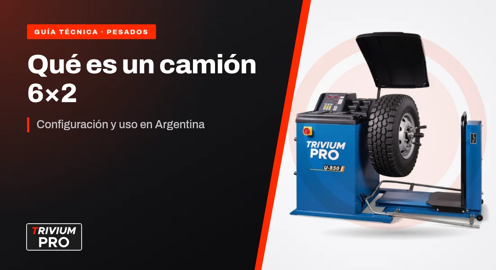

Elegir el camión adecuado para transportar carga no es solo cuestión de marca o modelo, sino también de entender la configuración de sus ejes. En este artículo, exploraremos qué significa un camión 6×2, sus diferencias con otras configuraciones populares y su uso en Argentina.
¿Qué es un camión 6×2?
El término 6×2 hace referencia a una configuración de ejes en camiones. ¿Cómo interpretarlo?
- 6: Total de ruedas (o posiciones de rueda), distribuidas en 3 ejes.
- 2: Ruedas motrices, es decir, las ruedas que reciben potencia del motor.
En un camión 6×2, hay un eje delantero que es de dirección y dos ejes traseros, de los cuales solo uno es motriz. El otro eje trasero es auxiliar, pudiendo ser fijo o elevable.
Comparación con otras configuraciones
4×2
- 4 ruedas (2 ejes), con 2 ruedas motrices (eje trasero).
- Es común en camiones ligeros y de mediana capacidad de carga.
- Ideal para transporte urbano o de distancias cortas.
6×4
- 6 ruedas (3 ejes), con 4 ruedas motrices (dos ejes traseros).
- Diseñado para terrenos complicados y cargas muy pesadas.
- Ofrece mayor tracción, ideal para la construcción, minería o zonas rurales.
Diferencias clave: 6×2 vs. 6×4
- 6×2 es más eficiente en consumo de combustible gracias a su menor resistencia al rodamiento.
- 6×4 tiene mayor tracción y es más adecuado para condiciones difíciles.
6×2 vs. 4×2
- 6×2 soporta mayor carga y es ideal para largas distancias en rutas.
- 4×2 es más maniobrable y económico para usos urbanos o trayectos cortos.
¿Cómo se usan los camiones 6×2 en Argentina?
En Argentina, los camiones 6×2 son una opción muy popular en el transporte de carga general. Estas son algunas de las razones principales:
1. Eficiencia en largas distancias
La configuración 6×2 es ideal para rutas pavimentadas, donde la tracción adicional de un 6×4 no es necesaria. Al tener solo un eje motriz, consume menos combustible y reduce los costos operativos.
2. Cumplimiento de regulaciones
La distribución de peso en un camión 6×2 permite adaptarse a las normativas de carga máxima por eje en rutas nacionales, evitando multas y prolongando la vida útil del vehículo.
3. Versatilidad en aplicaciones
Aunque los camiones 6×2 no tienen la misma tracción que un 6×4, son capaces de manejar diversas aplicaciones, desde el transporte de mercadería en general hasta operaciones en el sector agrícola.
4. Costos más bajos
Tanto el mantenimiento como el consumo de combustible de un 6×2 son menores en comparación con un 6×4. Esto lo hace atractivo para transportistas que buscan optimizar gastos.
Conclusión
Los camiones 6×2 representan una solución eficiente y versátil para el transporte de carga en Argentina. Su capacidad para manejar grandes volúmenes de carga a bajo costo los convierte en una elección popular para rutas pavimentadas y distancias largas. Sin embargo, para aplicaciones que requieren mayor tracción o condiciones de terreno difíciles, configuraciones como el 6×4 serán más adecuadas.
Al elegir un camión, es crucial evaluar las necesidades específicas del negocio y las rutas que se recorrerán. De esta manera, se garantiza no solo la eficiencia operativa, sino también el éxito a largo plazo en el transporte de carga.